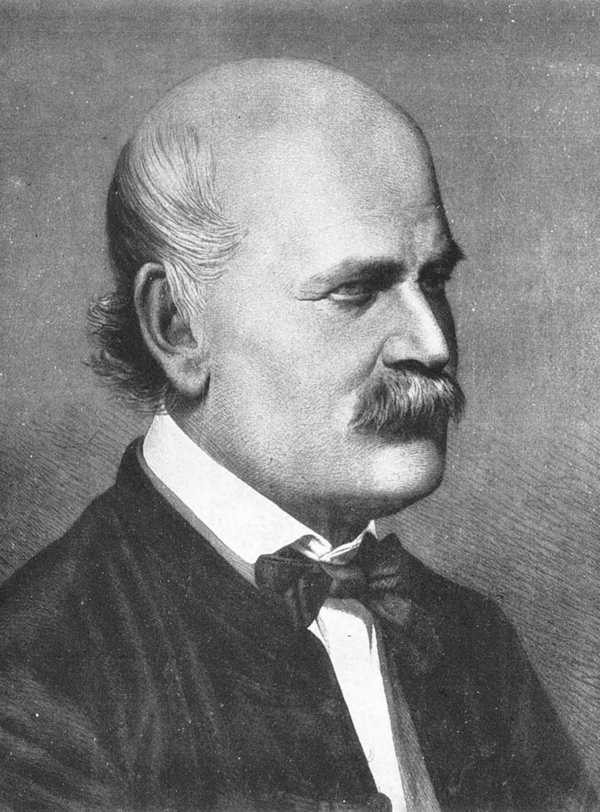

Ao tratar pacientes num contexto de saúde elementar, Hipócrates escreveu “eu nunca causarei dano a ninguém”, mais tarde traduzido e alterado para “Primum Non Nocere” ou “Primeiro não causar dano” (WACHTER, 2013).

O médico Ignaz Philipp Semmelweis conseguiu produzir a primeira evidência científica de que a higienização das mãos poderia evitar a transmissão da febre puerperal (NULAND, 2005).

Outras importantes contribuições partiram de Florence Nightingale. Durante a Guerra da Crimeia, frente às péssimas condições que os hospitais apresentavam, Florence destacou a necessidade de ambientes muito limpos, de mudanças organizacionais e de higiene, assim como tornou evidente a transmissão da infecção através do contato com substâncias orgânicas. Em 1863 ela escreve em Notes on Hospitals: “pode parecer estranho enunciar que a primeira exigência de um hospital é não causar dano ao doente” (FERNANDES; FERNANDES; RIBEIRO FILHO, 2000).

Ernest Codman, um cirurgião de Boston, estabeleceu a primeira iniciativa de avaliação dos serviços em saúde e um sistema de padronização hospitalar, a partir da necessidade e importância da garantia da qualidade dos resultados das intervenções e procedimentos médicos.
Em 1918, o Colégio Americano de Cirurgiões inicia seu primeiro programa de inspeção e certificação hospitalar. Em 1951, o programa torna-se a Joint Commission on Accreditation of Healthcare Organizations (JCAHO), atualmente, Joint Commission (WACHTER, 2013).
Saiba maisJames Reason, psicólogo britânico, publica Human Error, descrevendo sua teoria sobre o erro como falha do sistema. Através de inúmeras observações de acidentes, Reason propôs o Modelo do Queijo Suíço, no qual um erro em uma única ponta é o resultado de uma sequência alinhada de erros no processo – são os orifícios do queijo (WACHTER, 2013).
Saiba maisO Instituto de Medicina (IOM) dos EUA publicou o relatório To err is Human: building a safer health system (Errar é humano: construindo um sistema de saúde mais seguro), que sobrepôs à inquietação de uma das extensões da palavra qualidade, a segurança do paciente. O mesmo constatou que entre 44.000 e 98.000 pacientes internados morriam a cada ano nos EUA em decorrência da prestação de saúde, o que levou à mobilização das instituições internacionais (próprio relatório).
Saiba maisO IOM publicou o relatório “Cruzando o Abismo da Qualidade”, no qual foram definidos seis domínios para caracterizar o desempenho do sistema de saúde, com destaque para o domínio da segurança do paciente, sendo eles: segurança, efetividade, foco no paciente, otimização, eficiência e equidade.
Saiba maisNa 55º Assembleia Mundial de Saúde, é lançada a adoção da resolução WHA 55.18, dispondo da importância da atenção por parte dos Estados Membros a respeito da urgência quanto ao problema da segurança do paciente, reconhecendo a necessidade de promovê-la como um princípio fundamental de todos os sistemas de saúde, com o intuito de direcionar ações e promover o incentivo ao aprimoramento do conhecimento da segurança do paciente. Assim, estimulou-se a comunidade científica a levantar os principais pontos críticos e frágeis da atenção e assistência na área da saúde, com o objetivo de reduzir erros e gerar uma melhor qualidade dos serviços, provocando de maneira direta e/ou indireta a segurança dos clientes (WHO, 2008; MONTSERRAT-CAPELLA; CHO; LIMA, 2013).
Saiba maisA OMS lançou a Aliança Mundial para a Segurança do Paciente, tendo como elemento central a formulação de Desafios Globais para a Segurança do Paciente a cada dois anos, e como missão coordenar, disseminar e acelerar melhorias para a segurança do paciente em termos mundiais. (WHO, 2009).
Saiba maisForam identificadas as seis Metas Internacionais de Segurança do Paciente estabelecidas pela Aliança Mundial para Segurança do Paciente, que são soluções que têm como propósito promover melhorias específicas em áreas consideradas de risco na assistência, incluindo: 1) Identificar os pacientes corretamente; 2) Melhorar a comunicação efetiva; 3) Melhorar a segurança de medicamentos de alta vigilância; 4) Assegurar cirurgias com local de intervenção, procedimento e paciente corretos; 5) Reduzir o risco de infecções associadas aos cuidados de saúde; 6) Reduzir o risco de lesões ao paciente, decorrente de quedas.
Saiba maisO Primeiro Desafio Global para a Segurança do Paciente está focado no tema “Uma assistência limpa é uma assistência mais segura”, envolvendo ações relacionadas à melhoria da Higienização das Mãos em Serviços de Saúde, como foco na prevenção de infecções relacionadas com a assistência à saúde (IRAS), enquanto o segundo desafio global, no biênio 2007-2008, denominado “Cirurgias seguras salvam vidas”, direciona a atenção para os fundamentos e práticas da segurança cirúrgica (OMS, 2010; WHO, 2005).
Saiba maisA World Health Organization’s Collaborating Centre for Patient Safety lançou o programa “Nine Patient Safety Solutions”, objetivando reduzir os erros nos sistemas de saúde, redesenhando o processo de cuidar, para prevenir erros humanos inevitáveis (WHO, 2009).
Saiba maisEm resposta aos fatos e às consequências decorrentes de erros humanos, a Joint Commission International (JCI) publicou a quarta edição da Standards Lists Version, na qual o capítulo sobre os Objetivos Internacionais para a Segurança do Paciente estabelece seis metas previamente elaboradas pela OMS, em 2005, e designadas como Metas Internacionais de Segurança.
Saiba mais